Bir değişiklik bilgisayardan siteye nasıl gider? Dal, commit, pull request, CI, merge ve Railway — ne olduklarını, ekranda nasıl göründüklerini ve neden var olduklarını, bizim projemizin gerçek geçmişi üzerinden.
| Gördüğün | Anlamı |
|---|---|
| Merge pull request | Ekranda tıklayacağın bir düğme ya da menü öğesinin ekrandaki adı. GitHub ve Railway arayüzü İngilizce olduğu için adlar İngilizce bırakıldı. |
git push, main | Komut, dal adı, dosya adı ya da kod parçası. |
| Ctrl + F5 | Klavyede basılacak tuşlar. |
| Turuncu çerçeve + 1 | Ekran görüntüsündeki işaret; altındaki listede aynı numaranın açıklaması var. |
| TEMSİLİ ÇİZİM | Ekran görüntüsü alınamayan yerler (giriş gerektiren GitHub kutuları, Railway paneli) için çizilmiş benzeri. Yerleşim birebir olmayabilir; düğme ve başlık yazıları gerçek ekrandakilerdir. |
| ✓ yeşil · ✗ kırmızı · ● sarı · ⊘ gri | Kontrol sonucu: geçti · başarısız · hâlâ çalışıyor · atlandı (skipped). |
Bir satır kodun siteye ulaşması için üç yer var. Her biri tek bir şeyden sorumlu; ne olduğunu bilmek, bir şey takıldığında nereye bakacağını bilmek demek.
| Yer | Ne tutar? | Kim, ne yapar? |
|---|---|---|
| Bilgisayar (yerel depo) | Kodun çalışma kopyası. Ayrıca .env dosyası: yerel şifreler ve anahtarlar — asla GitHub'a gitmez. | Claude değişikliği burada yazar, testleri çalıştırır, commit'ler ve GitHub'a gönderir (push). |
| GitHub erdemsidal/collab-board | Kodun "resmî" kopyası: dallar, commit geçmişi, pull request'ler ve CI sonuçları. Depo herkese açık (Public). | GitHub Actions her PR'da testleri çalıştırır (CI). Sen PR'ı birleştirirsin (merge). |
| Railway proje collab-board | Çalışan uygulama (collab-board), veritabanı (Postgres) ve Redis. Canlı ayarlar Variables bölümünde. | main'e yeni kod girince kendiliğinden derler ve yayına alır. Sen yalnızca durumunu izlersin. |
| Adım | Kim | Ne olur | Ayrıntı |
|---|---|---|---|
| A | Claude | Dal açar, kodu ve testleri yazar, commit'ler, push eder, PR açar. CI kendiliğinden başlar. | Bölüm 5 / A |
| B | Sen | PR'ı açar, kontrollerin yeşil olduğunu görür, Merge pull request → Confirm merge. | Bölüm 5 / B |
| C | Otomatik | GitHub, Railway'e haber verir; Railway CI'ı bekler, derler, yayına alır. | Bölüm 5 / C |
| D | Sen | Railway'de yeni sürümün ACTIVE olduğunu ve logları kontrol eder, siteyi dener. | Bölüm 5 / D |
Aşağıdaki saatler GitHub'daki kayıtlardan (commit'ler, Actions çalışmaları ve Railway'in GitHub'a yazdığı yayın kayıtları) alındı.
Merge'den canlıya ≈ 7 dakika. Bunun ~6 dakikası main'deki CI'ı beklemekle geçiyor; bu bilinçli bir tercih (Bölüm 5 / C: "Wait for CI").
Her kavram için önce akılda kalsın diye bir benzetme, sonra gerçekte tam olarak ne olduğu, en sonda da bizde nerede gördüğün. Benzetme yalnızca yardımcıdır; işi yapan tanımdır.
.git klasöründeki bütün commit geçmişi. Aynı deponun birden fazla kopyası olur: bilgisayardaki yerel kopya ve GitHub'daki uzak kopya (Git'te adı origin). İkisi kendiliğinden eşitlenmez; push ve pull ile eşitlenir.055c8dc. Commit yalnızca bilgisayarda oluşur; GitHub'a gitmesi için push gerekir.Co-Authored-By: Claude … satırı yüzünden GitHub commit'lerin yanında iki avatar gösterir: sen ve Claude.main de böyle bir etikettir; tek farkı Railway'in onu dinlemesi.main ve birleştirilmiş 6 dal. Ad düzeni: feature/… yeni özellik, fix/… düzeltme, docs/… belge (ör. fix/hardening, feature/brevo-mail).git push -u origin fix/hardening. -u yalnızca ilk seferde gerekir: "bu yerel dal, GitHub'daki şu dalla eşleşsin" der.git pull (= önce indir [fetch], sonra yerel dala kat [merge]). Ör. bir PR birleştikten sonra yerel main'i güncellemek için: git checkout main ve git pull.fix/hardening) → hedef dal (base, ör. main). Bir numarası (#6) ve dört sekmesi vardır: Conversation, Commits, Checks, Files changed. PR açık kaldıkça dala eklenen her commit PR'a da eklenir.main'e her girişte, kodun GitHub'ın kendi temiz makinesinde (GitHub Actions) derlenip bütün testlerin çalıştırılması. Tarif .github/workflows/ci.yml dosyasında. "Benim bilgisayarımda çalışıyordu" sorununu yakalar: temiz makinede senin .env'in, önbelleğin, kurulu programların yoktur.main'de ikisi de ✓ olmalı.main) katar. Sonrasında PR kapanır ve mor Merged olur.Merge pull request #6 from erdemsidal/fix/hardening.0db46b9 çalışıyor. Aşağıdaki çizimde gerçek hâli var.main'in içindedirler. Aynı yerde Restore branch ile geri getirilebilir. Silmek zorunlu değil.main + birleştirilmiş 6 dal duruyor. Zararı yok; yalnızca dal listesi kalabalık. Depo ayarında "birleşince dalı otomatik sil" kapalı.main'de de değişen aynı dosyanın aynı satırları dalda da değiştiyse Git ikisini kendiliğinden birleştiremez. PR'da This branch has conflicts that must be resolved yazar ve birleştirme düğmesi kullanılamaz. Çözümü kodu bilen yapar: dal güncel main'le birleştirilir, çakışan satırlar elle düzeltilir, yeniden push edilir.CI'ın bütün tarifi tek bir dosyada: .github/workflows/ci.yml. Bu bölüm o dosyayı satır satır değil, ne zaman, ne ve neden sorularıyla anlatıyor.
name: CI/CD Pipeline
on:
push:
branches: [main, develop] # ① bu dallara kod girince
pull_request:
branches: [main] # ② hedefi main olan bir PR'da| # | Olay | Bizde ne demek? |
|---|---|---|
| ① | push — main'e (ya da develop'a) commit girdi | Merge de bir push'tur: merge commit main'e yazılır, CI çalışır (Actions'ta "pushed by"). develop diye bir dalımız yok; satır boilerplate'ten kaldı, zararsız. |
| ② | pull_request — hedefi main olan bir PR | GitHub'ın varsayılanıyla üç durumda çalışır: PR açıldığında (opened), dalına yeni commit geldiğinde (synchronize) ve kapatılıp yeniden açıldığında (reopened). Başlığı ya da hedef dalı değiştirmek (edited) CI'ı çalıştırmaz — PR #5'te bunu yaşadık (Bölüm 6). |
branches: [main] filtresi yüzünden, örneğin hedefi feature/invitations-profile olan bir PR'da hiçbir test koşmaz. Ayrıca bir dala push etmek, o dal için açık bir PR yoksa CI'ı tetiklemez.| İş | Ne zaman | Ne yapar | PR #6'da süre |
|---|---|---|---|
| 🧪 Test | Her tetiklemede | Kodu indirir (Checkout), Java 21 (Temurin) kurar, mvn verify ile derleyip bütün testleri çalıştırır. Sonuç raporlarını test-reports adıyla saklar (çalışma sayfasında Artifacts). | PR: 1 dk 40 sn main: 2 dk 44 sn |
| 🏗️ Build | Yalnızca push'ta ve Test geçtiyse | mvn package -DskipTests ile JAR üretir. main'deyse ayrıca Docker imajını derleyip GitHub'ın imaj deposuna (ghcr.io) latest ve commit kimliği etiketleriyle gönderir. | PR: atlandı (0 sn) main: 2 dk 45 sn |
build:
name: 🏗️ Build
needs: test # Test geçmeden başlamaz
if: github.event_name == 'push' # PR'da (pull_request) atlanırPR aşamasında sorulan tek soru şu: "Bu kod main'e girerse bir şey bozulur mu?" Bu sorunun cevabını Test verir. Build'in işi paketlemek ve imajı yayınlamak; henüz main'e girmemiş, belki hiç girmeyecek bir kodun imajını üretmek boşa iş. Bu yüzden if: github.event_name == 'push' satırı Build'i PR'da bilerek atlatır.
main'deki çalışmada Build çalışır ve ✓ olmalıdır. Railway de iki kontrolü birden bekler.Dockerfile ile kendisi derliyor (Bölüm 5 / C, "Building"). ghcr.io'daki imaj, "bu Dockerfile temiz bir makinede de derleniyor mu?" sorusunun cevabı ve ileride başka bir yere taşınmak istersen hazır bir paket. CI'da bilerek bir deploy işi yok: eskiden yalnızca ekrana yazı yazıp yeşil yanan sahte bir deploy adımı vardı, hiçbir şey yayınlanmadığı hâlde "başarılı" görünüyordu; kaldırıldı (commit 8e4bc0f, PR #1).Testler sahte (mock) bir veritabanı kullanmaz. Testcontainers kütüphanesi testler başlarken Docker'da gerçek bir PostgreSQL ve Redis konteyneri açar, adreslerini çalışma anında Spring'e verir (IntegrationTestBase) ve testler bitince kapatır. Böylece Flyway migration'ları, JPA eşlemeleri ve gerçek STOMP trafiği de denenmiş olur.
ci.yml'de ayrıca veritabanı servisi tanımlı değil, gerek yok../mvnw test) çalıştırmadan önce Docker Desktop açık olmalı; yoksa testler konteyner açamaz.27 Temmuz – 3 Ağustos arasında kod doğrudan main'e yazılıyordu ve Actions'taki ilk 30 çalışmanın hepsi kırmızıydı (#1–#30). Sebep testler değildi: ci.yml içindeki JWT_SECRET geçerli bir Base64 değeri değildi, uygulama tek test koşmadan açılamıyordu. PR #1 bunu düzeltti (commit 8e4bc0f); o günden beri 12 çalışmanın 12'si yeşil (#31–#42).
Çalışma sayfalarının altında sarı üçgenli Annotations görürsün: "Node.js 20 is deprecated…", "setup-java v4 is deprecated…", "The ubuntu-latest label will migrate to Ubuntu 26…". Bunlar GitHub'ın bakım uyarıları; testleri etkilemez ve çalışmayı kırmızı yapmaz. İleride ci.yml'deki eylem sürümlerini (ör. actions/setup-java@v5) güncelleyen küçük bir PR ile kapanırlar.
Ekran görüntüleri 23 Ekim 2026 akşamı, deponun herkese açık hâlinden, giriş yapmadan alındı. Sen giriş yapmış olduğun için birkaç fark görürsün: sağ üstte Sign in yerine profil fotoğrafın, PR'larda yorum kutusu, açık PR'larda merge kutusu (Bölüm 5). Turuncu çerçeveleri ve numaraları ben ekledim.
Adres: github.com/erdemsidal/collab-board — üstteki sekmelerden Code.
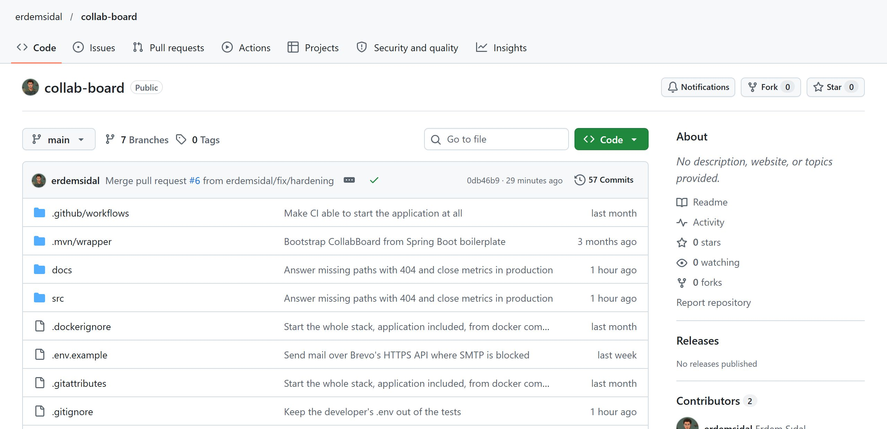
123456789main'in içeriğini görüyorsun. Tıklayınca dallar listelenir; birini seçince sayfa o dalın dosyalarını gösterir.main + birleştirilmiş 6 dal (hiçbiri silinmedi).main'deyken bu satır = canlıdaki sürüm. Burada PR #6'nın merge commit'i (0db46b9).main'in bütün geçmişi; tıklayınca tarih sırasıyla commit listesi açılır.ci.yml bu klasörde.Üstteki Pull requests sekmesi. Varsayılan olarak açık PR'lar listelenir; aşağıdaki görüntüde Closed'a tıklanmış hâli var.
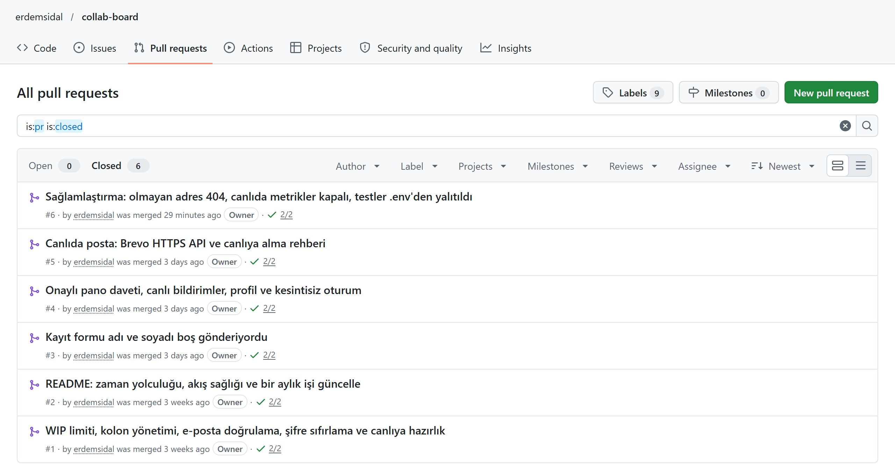
123456PR #6, Conversation sekmesi.
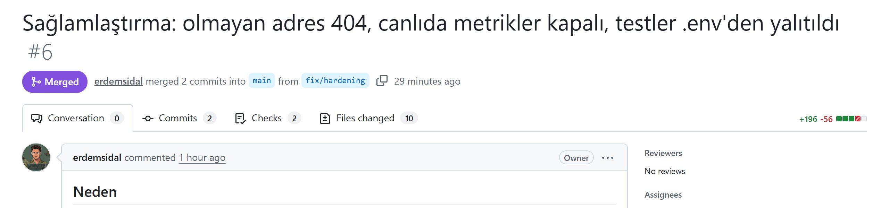
123456789main — değişikliklerin gireceği yer.fix/hardening — değişikliklerin durduğu yer. Cümle şöyle okunur: "erdemsidal, fix/hardening'den 2 commit'i main'e birleştirdi." Açık bir PR'da "wants to merge 2 commits into main from fix/hardening" yazar.Aynı sayfanın en altı. Açıklamanın altında PR'ın başına gelen her şey sırasıyla listelenir.
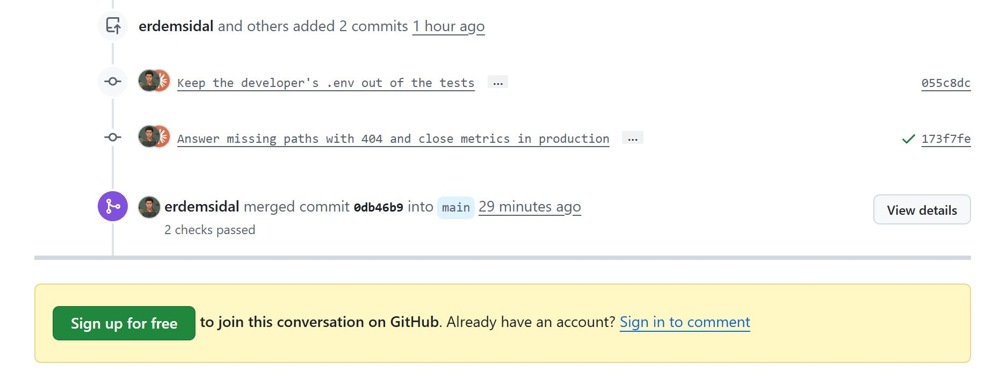
123456055c8dc'nin yanında işaret yok: iki commit tek push'la geldi, CI yalnızca en sondakini dener (en sondaki, öncekileri de içerir).0db46b9 into main" — merge commit'in kimliği ve hedefi.main'e girince CI bir kez daha çalıştı (bu kez push: Test + Build) ve ikisi de geçti.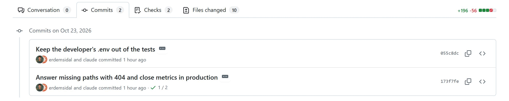
12345Co-Authored-By satırı sayesinde).055c8dc; yanında kopyala ve <> (o andaki dosyalara göz at). Kimliğe tıklayınca commit sayfası açılır (4.9).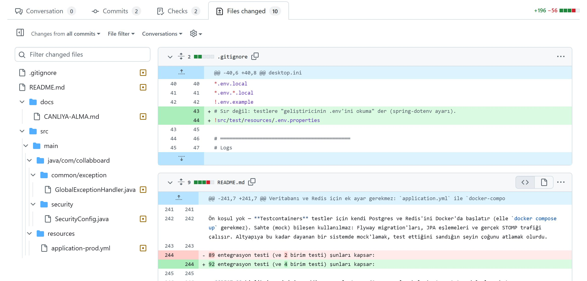
123456.gitignore; soldaki "2" bu dosyada değişen satır sayısı.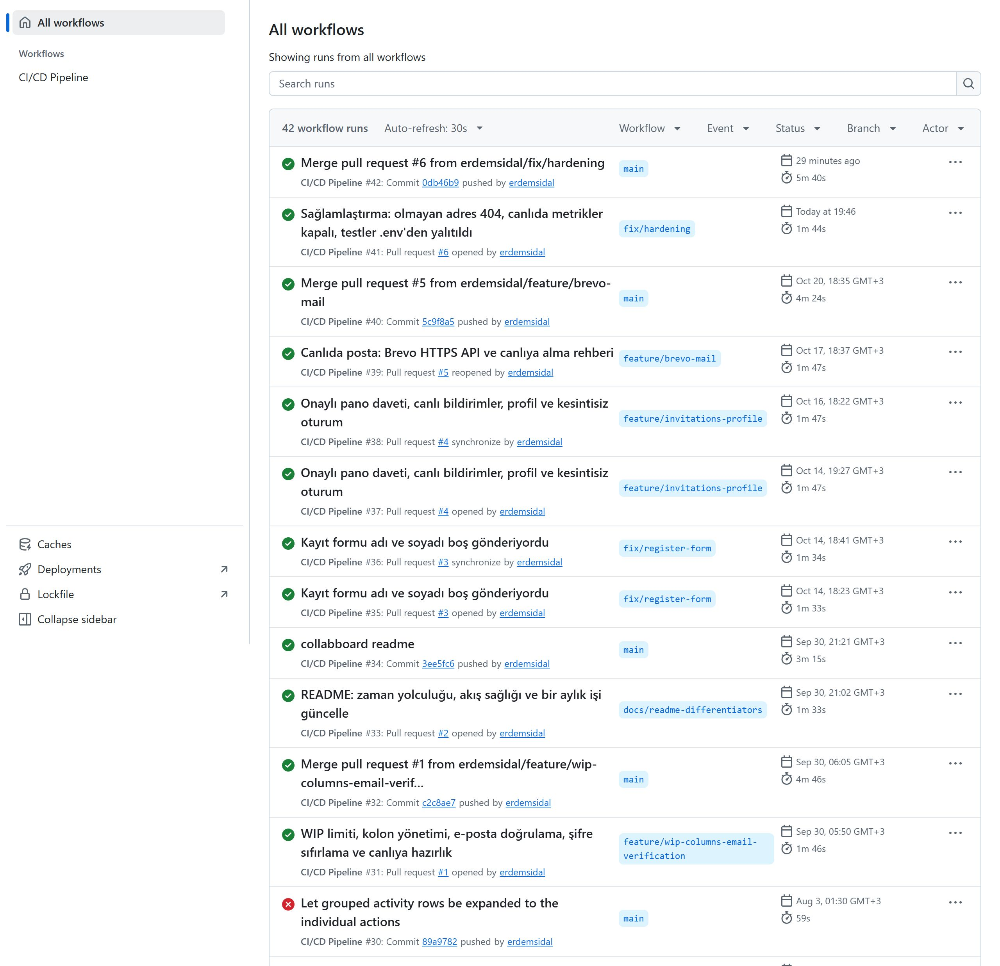
1234567ci.yml'deki name:). Bizde tek workflow var.main'e push (merge).main, PR çalışmalarında kaynak dal (ör. fix/hardening).Actions listesinde bir satıra tıklayınca açılır. Önce main'deki çalışma (#42), sonra aynı işin PR'daki çalışması (#41).
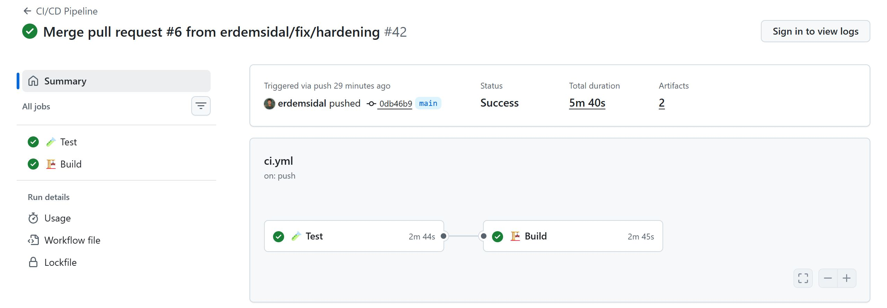
1234567main'e push (merge).0db46b9 · main.needs: test). main'de olduğu için Docker imajını da üretti.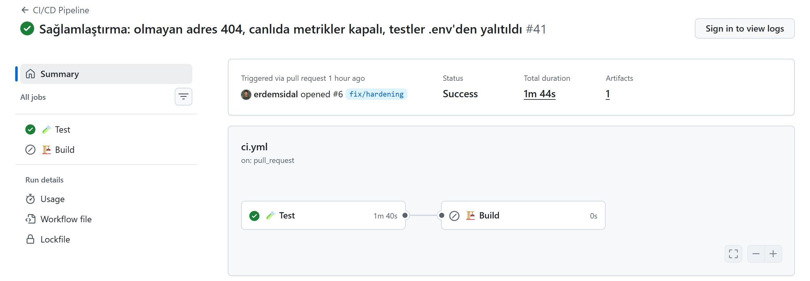
12345ci.yml'in hangi tetikleyicisiyle başladığı.Bir commit kimliğine (ör. 055c8dc) tıklayınca açılır.
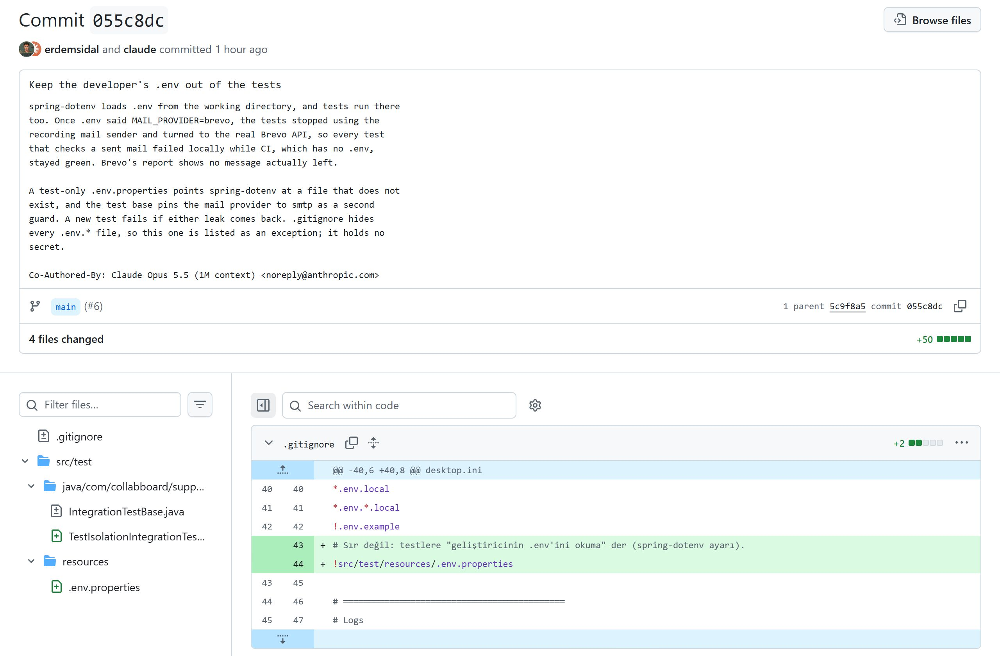
1234567Co-Authored-By.main'de ve PR #6 ile gelmiş.main'in ucu (PR #5'in merge commit'i). Bir merge commit'inde burada "2 parents" yazar..gitignore'a iki satır eklenmiş — testlere özel .env.properties dosyasının depoya girebilmesi için istisna (Bölüm 6.4).Dört parça: A hazırlık (Claude), B birleştirme (sen), C yayın (otomatik), D kontrol (sen). Sonda, bu akışın dışına çıkan iki durum: Railway kapalıyken ve yalnızca bir ayar değişirken.
main'den yeni bir dal açılır — ör. git checkout -b fix/hardening.Değişiklik bitene kadar main'e (canlıya) dokunmamak için../mvnw test (Docker açık).Kırık kodu GitHub'a göndermeden önce yakalamak için.git push -u origin fix/hardening.main; açıklamada Neden / Ne değişti / Test / Not.Pull requests sekmesinde Open 1; PR'da sarı ● ile CI çalışıyor. Claude sana PR bağlantısını verir.main geçmişinde #2'nin merge commit'i (3ee5fc6) PR numarası taşımıyor.main'de kalır. Gerekirse aynı yerden Restore branch. Silmesen de hiçbir şey bozulmaz.GitHub görünümünü zaman zaman yeniler; kutuların yerleşimi biraz farklı olabilir, başlık ve düğme yazıları aynı kalır.
main dalında koruma kuralı (branch protection) yok. Yani kontroller kırmızıyken de Merge pull request düğmesi basılabilir durumdadır. Karar tamamen sende: aşağıdaki durumlardan birini görürsen basma.Yap: birleştirme. Claude'a "PR #N'de CI kırmızı" yaz. Düzeltme aynı dala push edilince CI kendiliğinden yeniden çalışır.
Yap: 2–3 dakika bekle, sayfayı yenile (F5).
Yap: Claude'a "PR #N'de conflict var" yaz; dalı güncel main'le birleştirip çözer.
main değil (üstte "into başka-dal").Confirm merge'e bastığın an iki şey aynı anda olur:
main'deki yeni merge commit için CI'ı başlatır (Test, ardından Build; toplam ~5–6 dk).Railway'de collab-board kutusu → Deployments sekmesinde en üstte yeni bir satır belirir ve şu durumlardan geçer:
| Durum | Ne oluyor? |
|---|---|
| Waiting for CI | Railway, GitHub'daki kontrollerin (Test + Build) bitmesini bekliyor. "Wait for CI" ayarı açık olduğu için: kontroller kırmızı biterse bu sürüm yayına alınmaz. |
| Initializing | CI ✓ geldi; yayın hazırlanıyor. |
| Building | Kod GitHub'dan alınıyor, Dockerfile ile imaj derleniyor. Derleme loglarında Maven çıktısını görürsün. |
| Deploying | Yeni konteyner açılıyor: Variables verilir, Spring Boot başlar, Flyway yeni migration'ları uygular. |
| ACTIVE · Online | Trafik yeni sürüme döndü. Satırda ACTIVE, servis kutusunda yeşil Online. Önceki sürüm kaldırılır. |
Railway paneli giriş gerektirdiği için ekran görüntüsü yok; durum adları ve düğmeler paneldeki gibidir.
/actuator/health girilmemişse Railway, yeni konteyner açılır açılmaz trafiği ona verir; uygulama hazır olana kadar ~20 saniye "Application failed to respond" görülebilir. Bu ayar bir kez girilir (CANLIYA-ALMA.md, Adım 5); girilip girilmediğini aynı yerden görebilirsin.collab-board seçili olmalı.erdemsidal/collab-board, dal main; Auto deploys when pushed to GitHub açık; Wait for CI açık.Started — uygulamanın açıldığı an.migration — hangi veritabanı değişikliklerinin uygulandığı (varsa).Brevo — "Brevo bağlantısı doğrulandı", "Brevo gönderen adresi onaylı".level_value alanı var: 20000 = INFO (bilgi), 30000 = WARN (uyarı), 40000 = ERROR (hata). 40000 görürsen satırı oku; kutu içinde büyük harfli bir uyarı varsa CANLIYA-ALMA.md Bölüm 6'da aynı başlığı ara./actuator/health → {"status":"UP"}; /actuator/metrics → 404 (PR #6'dan beri kapalı).main çalışması yeşil.Kredi harcamasın diye servisleri Remove ile kapattıysan, merge'den önce veritabanlarını aç:
Kapatırken sıra tersidir: önce collab-board, sonra Postgres ve Redis — her birinde Deployments → ACTIVE satırı → ⋮ → Remove. Remove silmek değildir: yalnızca çalışan kopya kalkar; kod, ayarlar, veriler ve adres yerinde durur.
BREVO_API_KEY, JWT_SECRET) yalnızca burada yaşar.deploy yaz → Deploy Latest Commit → servis olarak collab-board. Sonra "zil"i kontrol et (yukarıdaki kutu; Bölüm 7).Bu bölümdeki her tarih ve saat GitHub kayıtlarından (git geçmişi, PR olayları, Actions çalışmaları, yayın kayıtları) alındı.
main'e yazıldı: pano, gerçek zamanlı senkron, çakışma çözümü, Redis köprüsü, kimlik doğrulama, roller, çalışma alanları, yeni arayüz, zaman yolculuğu. CI çalışmaları #1–#30'un hepsi kırmızı (Bölüm 3).feature/wip-columns-email-verification — 11 commit: WIP limiti, kolon yönetimi, e-posta doğrulama, şifre sıfırlama, canlıya hazırlık, CI düzeltmesi. CI #31: ilk yeşil. Merge commit c2c8ae7.docs/readme-differentiators — yalnızca README. Merge commit mesajı "collabboard readme" olarak değiştirildi (3ee5fc6).fix/register-form — kayıt formu adı ve soyadı boş gönderiyordu.feature/invitations-profile — #3'ün dalının üstüne kuruldu: onaylı davet, canlı bildirim, profil; 16 Eki'de kesintisiz oturum eklendi.feature/brevo-mail — #4'ün üstüne. Hedefi önce feature/invitations-profile; 18:36'da main'e çevrildi; CI çalışmadı; 18:37'de kapatılıp yeniden açıldı → CI #39 ✓.5c9f8a5); #3 ve #4 aynı anda kendiliğinden "merged" oldu. Railway yayın başlatmadı → elle "Deploy Latest Commit". Canlıda posta Brevo ile çalıştı; sonra servisler Remove ile durduruldu. Aynı gün: Railway CLI'nin bu bilgisayarda engellendiği görüldü.fix/hardening — 20:39 merge, 20:45 CI ✓, 20:46 canlı. İlk otomatik yayın.| # | Başlık | Açıldı → birleşti | Ne değişti? |
|---|---|---|---|
| 1 | WIP limiti, kolon yönetimi, e-posta doğrulama, şifre sıfırlama ve canlıya hazırlık | 30 Eyl 05:50 → 06:05 | Dolu kolona kart girmez; kolon ekle/adlandır/sil; yaşlanan iş; arama/süzme; hesap e-postayla doğrulanır; şifre sıfırlama; güvenlik (origin listesi, prod'da açık JWT anahtarıyla açılmama, hız sınırı); CI düzeldi; PORT/Redis parolası; docker compose ile tüm yığın. 11 commit. |
| 2 | README: zaman yolculuğu, akış sağlığı ve bir aylık işi güncelle | 30 Eyl 21:02 → 21:21 | README'ye ürünü farklı kılan iki özellik, demo, API ve ADR tablosu, CI rozeti. Kod yok. |
| 3 | Kayıt formu adı ve soyadı boş gönderiyordu | 14 Eki 18:23 → 20 Eki 18:35 | Form değerleri durumda tutuluyor; hata sonrası form silinmiyor; nötr örnek yazılar; "Benimle paylaşılanlar" bölümü. |
| 4 | Onaylı pano daveti, canlı bildirimler, profil ve kesintisiz oturum | 14 Eki 19:27 → 20 Eki 18:35 | Davet → kabul ile üyelik; kişiye özel canlı bildirim; profil (ad, şifre, fotoğraf); 15 dakikada oturumdan atma hatası (403 → 401); 30 günlük kayan oturum; saat dilimi düzeltmesi. |
| 5 | Canlıda posta: Brevo HTTPS API ve canlıya alma rehberi | 17 Eki 18:35 → 20 Eki 18:35 | Railway SMTP portlarını kapattığı için posta Brevo'nun HTTPS API'sinden; MAIL_PROVIDER; açılışta anahtar/gönderen kontrolü; docs/CANLIYA-ALMA.md, docs/MAIL-KURULUMU.md. |
| 6 | Sağlamlaştırma: olmayan adres 404, canlıda metrikler kapalı, testler .env'den yalıtıldı | 23 Eki 19:46 → 20:39 | /favicon.ico ve kapalı Swagger 500 yerine 404; canlıda yalnızca /actuator/health açık; testler geliştiricinin .env'ini okumuyor; rehber Railway paneline göre. |
Değişikliklerin ayrıntılı listesi ve "nasıl denenir" notları: docs/DEGISIKLIK-GUNLUGU.md.
#3 henüz birleştirilmemişken iş devam etti. #4'ün dalı #3'ün dalından, #5'in dalı da #4'ün dalından açıldı; yani her dal bir öncekinin bütün commit'lerini içeriyordu. Buna "stacked PR" (üst üste PR) denir.
Neden #5'in hedefi main'e çevrildi? İki sebeple: (1) CI yalnızca hedefi main olan PR'larda çalışıyor (pull_request: branches: [main]); hedefi feature/invitations-profile iken #5'te hiç test koşmamıştı. (2) Hedef başka bir dal olsaydı, birleştirmek kodu o dala götürürdü, main'e (canlıya) değil.
Birleştirme günü ne oldu? 20 Ekim 18:35:53'te #5 birleştirildi; tek merge commit (5c9f8a5) dokuz commit'in hepsini main'e taşıdı. GitHub, #3'ün ve #4'ün commit'lerinin artık main'de olduğunu görünce iki saniye sonra (18:35:55) onları da kendiliğinden "merged" işaretledi. Bu yüzden main geçmişinde "Merge pull request #3" ya da "#4" diye ayrı commit yok.
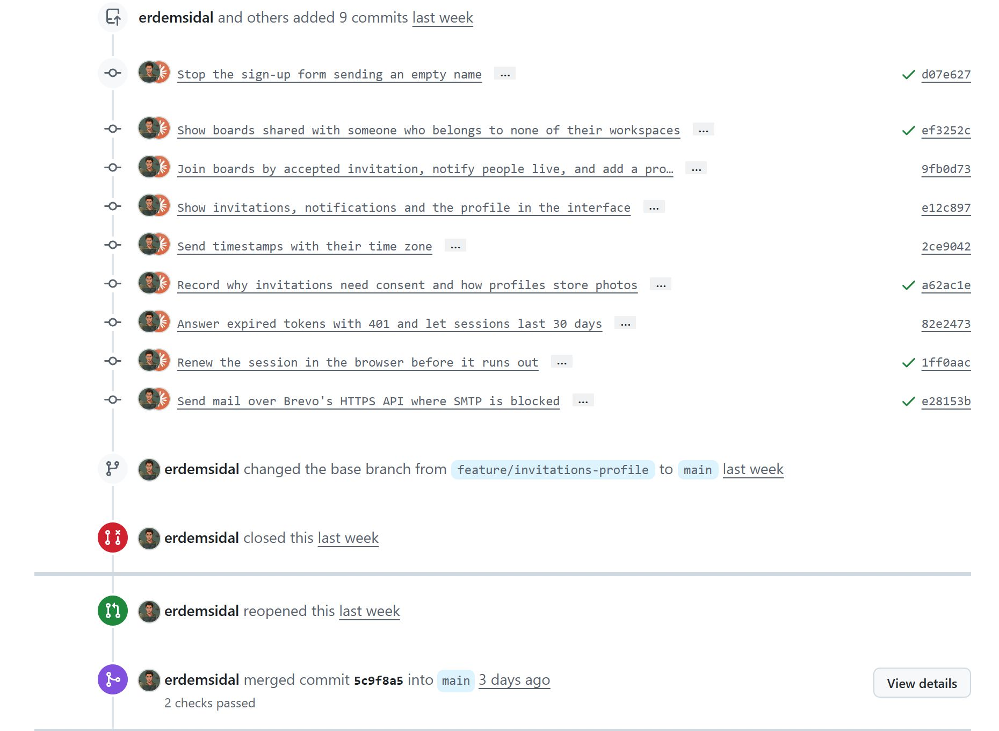
123456d07e627, ef3252c, a62ac1e, 1ff0aac) #3'ün ve #4'ün kendi CI çalışmalarından.ci.yml'deki pull_request tetikleyicisi olay türü belirtmiyor; GitHub'ın varsayılanı yalnızca opened, synchronize ve reopened. PR açıldığında hedef main değildi, filtre tutmadı; hedef main'e çevrildiğinde ise olay edited oldu ve listede yok. İki çıkış yolu vardı: dala yeni bir commit push etmek (synchronize) ya da PR'ı kapatıp yeniden açmak (reopened). Commit eklememek için ikincisi seçildi.
main'deki CI (#40) yeşil bitti, ama Railway'de hiçbir şey olmadı. Geçici çözüm olarak Railway'de Ctrl+K → Deploy Latest Commit ile elle yayınlandı.collab-board deposuna erişim verildi; Railway'de Auto deploys when pushed to GitHub ve Wait for CI açıldı./actuator/metrics ve /favicon.ico artık 404..env'i testlere sızıyordu (PR #6)spring-dotenv, .env dosyasını çalışma klasöründen okur — testler de aynı klasörde çalışır. Brevo'yu yerelde denemek için .env'e MAIL_PROVIDER=brevo yazılınca testler sahte posta kutusu yerine gerçek Brevo'ya yöneldi ve yerelde 11 test kırıldı. CI'da .env olmadığı için CI yeşil kaldı. Brevo raporuna göre gerçekte posta gitmedi.src/test/resources/.env.properties dosyası spring-dotenv'e var olmayan bir dosya adı veriyor (filename=.env.testlerde-okunmaz, ignoreIfMissing=true); test tabanı posta yolunu ayrıca smtp'ye sabitliyor; yeni TestIsolationIntegrationTest sızıntı geri gelirse kırılıyor. .gitignore bütün .env.* dosyalarını gizlediği için bu dosyaya istisna eklendi (içinde sır yok) — Bölüm 4.9'daki yeşil satırlar.Windows'un Akıllı Uygulama Denetimi (Smart App Control) railway.exe'yi engelliyor: komut hiçbir şey yazmadan kapanıyor. Bu yüzden Railway'deki her iş railway.com web panelinden yapılıyor ve docs/CANLIYA-ALMA.md PR #6'da panel adımlarına göre yeniden yazıldı (CLI karşılıkları belgenin içinde, katlanmış bölümde duruyor).
Önce gördüğün şeyi sol sütunda bul. Canlıdaki uygulamaya özgü hatalar (posta, açılış, oturum) için ayrıca docs/CANLIYA-ALMA.md Bölüm 6.
| Belirti | Sebep | Ne yapmalı |
|---|---|---|
| PR'da sarı ● / "Some checks haven't completed yet" | CI hâlâ çalışıyor (PR'da ~2 dk). | Bekle, sayfayı yenile. Birleştirme. |
| PR'da kırmızı ✗ / "Some checks were not successful" | Bir test kırıldı ya da derleme başarısız. | Birleştirme (GitHub seni durdurmaz). Claude'a haber ver; düzeltme push edilince CI kendiliğinden yeniden çalışır. Ayrıntı: Details → giriş yaptıysan log. |
| PR'da Build "Skipped" / commit yanında "1 / 2" | Build yalnızca push'ta çalışır. | Hiçbir şey; normal (Bölüm 3). |
| Çalışma sayfasında sarı üçgenli "Annotations" (Node.js 20, setup-java v4, Ubuntu 26) | GitHub'ın bakım uyarıları. | Şimdilik yok say; ileride sürüm güncelleyen küçük bir PR. |
| "This branch has conflicts that must be resolved" | Aynı satırlar hem dalda hem main'de değişmiş. | Birleştirme; Claude'a söyle. Dal güncellenip çakışma çözülür. |
| PR'ın hedefini değiştirdim, CI çalışmadı | Hedef değiştirmek edited olayıdır; CI yalnızca opened / synchronize / reopened'da çalışır. | Close pull request → Reopen pull request (ya da yeni bir commit push). Bölüm 6.3. |
| PR'da hiç kontrol görünmüyor | PR'ın hedefi main değil. | Başlığın altındaki "into …" kısmına bak. Hedef main olmalı. |
| Birleştirdim, CI yeşil, ama Railway hiç yayın başlatmadı | "Zil" yok: Railway App kurulu değil ya da depoya erişimi yok. İzi: GitHub'da yeni Deployment kaydı oluşmadı. | GitHub → profil → Settings → Applications → Installed GitHub Apps → Railway → Configure → collab-board seçili mi? Railway → collab-board → Settings → Source. O ana kadar: Ctrl+K → Deploy Latest Commit. |
| Railway uzun süre "Waiting for CI" | main'deki CI (Test + Build, ~6 dk) bitmedi. | GitHub → Actions'ta en üstteki main çalışmasını izle. Kırmızı biterse Railway bu sürümü yayınlamaz: önce kodu düzelt. |
| Yayından sonra servis "Crashed" | Çoğunlukla Postgres/Redis kapalı ya da bir değişken eksik/yanlış. | View logs; CANLIYA-ALMA.md 6.2'deki tablo. Veritabanları kapalıysa önce onları Redeploy. |
| Yayından hemen sonra ~20 sn "Application failed to respond" | Healthcheck Path girilmemiş: trafik, uygulama hazır olmadan yeni sürüme döndü. | Bir kez: Settings → Deploy → Healthcheck Path = /actuator/health. |
| Site hâlâ eski görünüyor | Yayın henüz bitmedi ya da tarayıcı eski sayfayı gösteriyor. | Railway'de en üst satır ACTIVE mı ve doğru merge'ün başlığını mı taşıyor? Sonra Ctrl+F5. |
| Değişken değiştirdim, etkisi yok | Değişiklik biriktirildi ama yayınlanmadı. | Variables sayfasının üstündeki Apply N changes → Deploy. |
| Yerelde testler kırmızı, CI yeşil | Ortam farkı (yerel .env, Docker kapalı, eski bağımlılık…). | Docker Desktop açık mı? .env'de yeni bir ayar var mı? PR #6 örneği: Bölüm 6.5. |
railway komutu hiçbir şey yazmadan kapanıyor | Windows Akıllı Uygulama Denetimi engelliyor. | Web panelini kullan (railway.com). |
| Yanlışlıkla birleştirdim / yayın bir şeyi bozdu | — | Hızlı: Railway → Deployments → önceki iyi sürüm → ⋮ → Redeploy (veritabanı geri dönmez). Kalıcı: PR sayfasında Revert → yeni PR → birleştir. |
| "Delete branch"e bastım, pişman oldum | — | Aynı PR sayfasında Restore branch. Commit'ler zaten main'de. |
| Yerelde açtığım hesap canlıda yok | Yerel veritabanı ile canlı veritabanı ayrı. | Canlıda yeniden kaydol. İkisi hiçbir zaman eşitlenmez. |
test-reports).main.main için kapalı.V13__…); açılışta uygulanır, geri alınmaz.ubuntu-latest)..env'in canlı karşılığı.ci.yml (CI/CD Pipeline).main from …" yazmalı.Started var mı? level_value 40000 (ERROR) var mı?.env'i ya da bir anahtarı GitHub'a koyma · uygulanmış bir migration dosyasını değiştirme.deploy → Deploy Latest Commit; sonra GitHub → Settings → Applications → Railway → Configure.